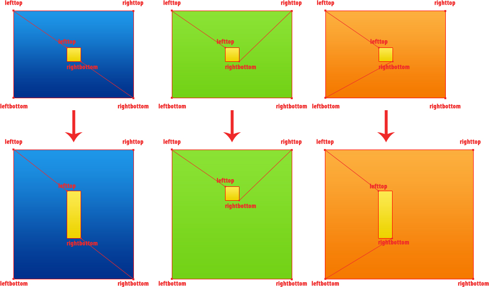
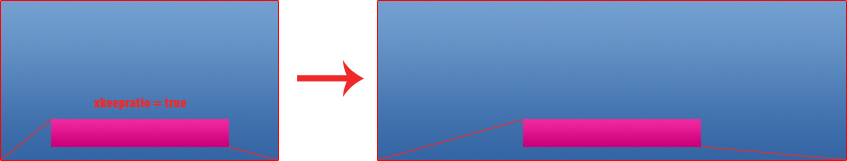
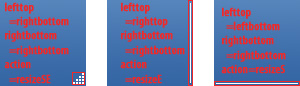
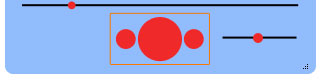

This documentation aims at helping you understand how VLC decides how to resize a skin and enabling you to create properly resizable skins.
How each element in the skin is resized and repositioned is determine by four attributes.
When a window has been resized the position and size of each of the elements in the currently displayed layout is determined by how the edges of the elements are connected to the edges of their parent panel, group or layout.
These connections are set by the lefttop and rightbottom attributes of the elements. They define to which edge of the parent item the upper left edge and lower right edge move. The following image illustrates some example connections and how the element is then resized and repositioned when the window is resized.

Examples:
So an element which should always stay in the upper left corner of the window must have both the lefttop and rightbottom attribute set to lefttop.
For it to stay always in the upper right corner they accordingly would have to be set to righttop.
If an element should keep its vertical position in the skin, but should change its width according to the width of the window, lefttop has to be set to lefttop and rightbottom to righttop.
The keep x ratio and keep y ratio (called xkeepratio and ykeepratio in the XML) tell VLC whether the width or height of an element should be adjusted when resizing or whether just its position should be changed.
Example:
If you'd want an element to keep its relative horizontal position
you'd have to set lefttop and rightbottom so that the element would be resized according to the change of width.
Additionately you have to set the keep X ratio attribute to true. Then the width of the element will not be changed and it will keep its relative horizontal position in the window.

Example:

In order that the user can change the size of the skin an image is needed of with the action is set to one of the resize actions.
The avaiable resize actions are:
Each image that is resized can be resized in two modes.
The one is called mosaic. In this mode the source image is tiled to fill the resized area.In stretch mode the image is stretched to fit the new bigger or smaller area.
Let's say we want to create the skin as it is picture to the left. First of all we have to look at the background. How shall it be resized? For sure we would not want the rounded corners to get bigger but they should stay as they are. Taking this into consideration we have to split up the background into several images. How that could look like is pictured to the right. That's a typical way you would make up the background of your resizable skin.
Now you place all these images belonging to the background to their proper positions in the skin's window.
For the image at the top-left corner you have to set both Lefttop and Rightbottom: to lefttop. That makes it stay in the top-left corner and fixed in size. The attributes of the image at the top-right corner have to be set to righttop so that it stays in the top-right corner.
Accordingly you set the attributes for the images in the bottom corners to either leftbottom or rightbottom.
For the image at the top edge you'd have to set Lefttop to lefttop but Rightbottom to righttop. That makes it horizontally resizable but lets it stay at the top of the window. For the bottom image you'd accordingly set the attributes to leftbottom and rightbottom so that it stays at the bottom of the window.
The Lefttop attribute of the left edge image would have to be set to lefttop, the Rightbottom attribute to leftbottom. For the right edge you'd set them accordingly to righttop and rightbottom.
The image in the middle which fills up the rest would need the Lefttop attribute set to lefttop and the Rightbottom attribute to rightbottom.
Next let's look at the video element. We put it to the right place in the skin and give it the proper dimensions. It should be resized similar to the middle image of the background, always adapting to the new window size. Thus also there the Lefttop attribute is set to lefttop and the Rightbottom attribute to rightbottom.
Now let's get to the time slider beneath the video. It would be resized only horizontally and stay beneath the video. Thus it would have to orientate itself towards the bottom of the window. Accordingly we'd set the Lefttop attribute to leftbottom and the Rightbottom attribute to rightbottom.
Concering the volume slider we either could let it be resized or let it stay fixed in size. If we would want it to be resized horizontally we'd set Lefttop to leftbottom and Rightbottom to rightbottom. If it was to stay fixed in size we'd set both attributes to rightbottom.
The close button should stay fixed in size and attached to the upper right corner. Thus Lefttop and Rightbottom are set to righttop.
The resize throbber should stay in the lower right corner, Lefttop and Rightbottom will be set to rightbottom. Additionaly we set the Action attribute to resizeSE so that we can actually control the window's size with it.
Now let's turn to the playback controls in the lower center of the player. They should stay in the center of the player and not change size. This we can accomplish by putting all these in a Panel that we place in the lower center of the window. The panel's position and dimensions are illustrated by the orange box in the image to the right.
As the playback controls would not have to change their position inside the panel we just leave their lefttop and rightbottom attributes as they are. We just have to set the Lefttop attribute of the panel to leftbottom and Rightbottom to rightbottom. Furthermore we'd have to set Keep X Ratio to true, so that the panel stays horizontally centered.
Now that all elements of the skin are properly set up for resizing, we just have to enable that the layout can be resized by modifying it's minimum and maximum dimensions. Otherwise VLC will not allow the layout to be resized to any other size than the default size.
Once you have done that, you should be finished.